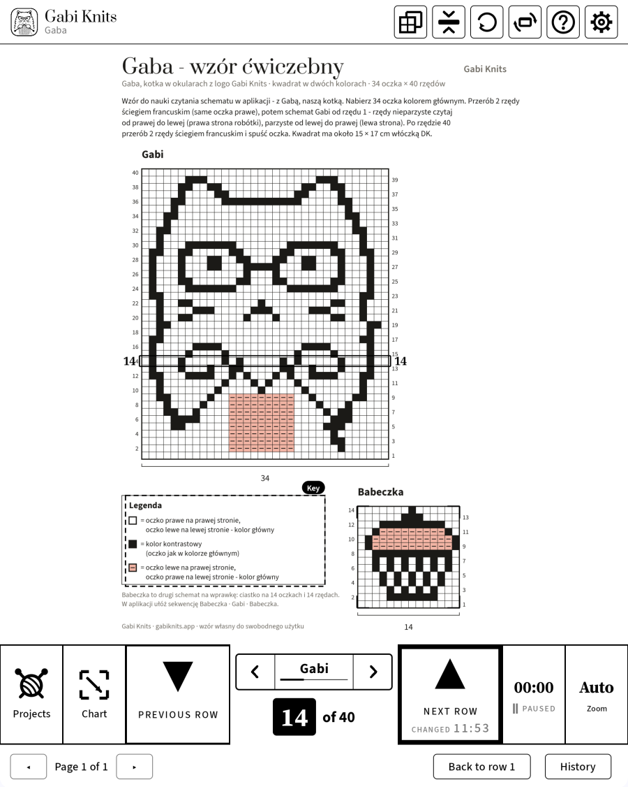
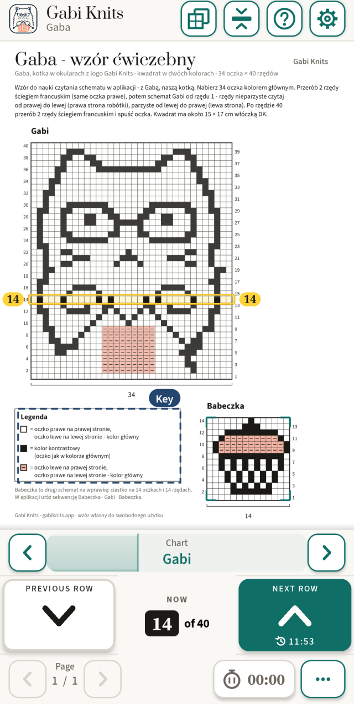
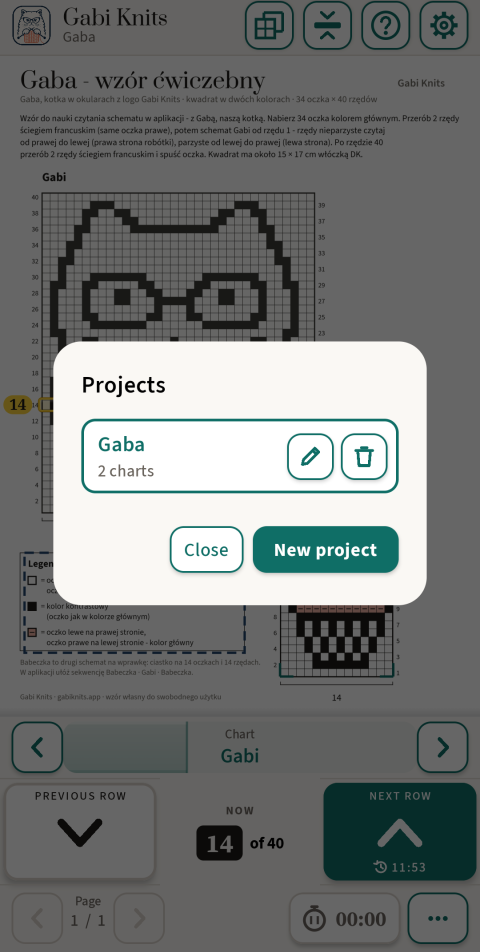
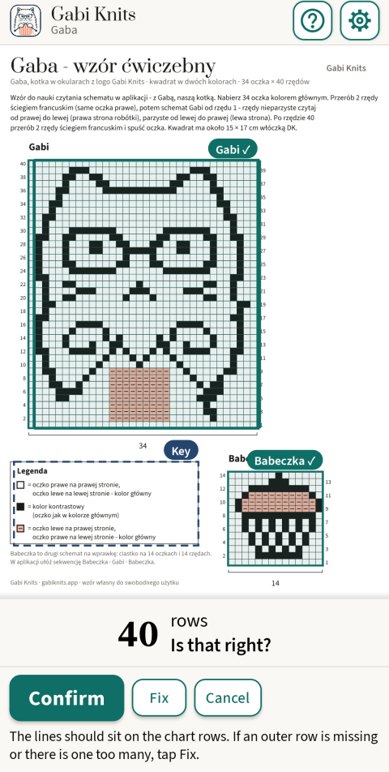
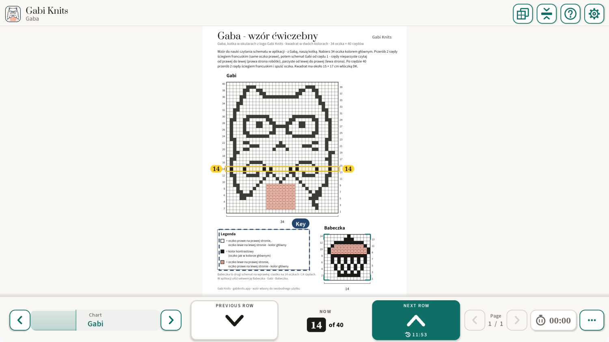

Knitting chart reader for Android
Always know which row you’re on.
Open a PDF pattern, tap the chart, and Gabi Knits finds its rows and clearly marks the one you are knitting. One big button takes you to the next row, and your progress saves itself.
- No account
- No ads
- Works without internet


It finds the chart for you
Tap the chart on the page and the app finds its frame and rows by itself. You only check and confirm.
Your row, always in sight
The current row is clearly marked, with its number on both sides. One big “Next row” button, easy to press with one hand.
Made for e-ink
Black on white, no animations, large buttons and row numbers – designed for BOOX tablets from the very first version.
For BOOX e-ink tablets
Designed for e-ink from day one
Gabi Knits began on a BOOX Note Air, and that is where every version is tested. On e-ink the screen stays calm: black on white, nothing moving and nothing that depends on colour. On phones and regular tablets the same app uses colour and smooth movement.
A thick frame, not colour
The current row gets a bold black frame, so it stands out on a black-and-white screen.
No animations
Pages and rows change in a single step. Nothing slides or fades on the e-ink screen.
Large buttons and numbers
Big row buttons and row numbers you can read from your knitting.
Tested on BOOX Note Air
Runs on BOOX tablets with Google Play, in portrait and landscape.
How it works
Three steps from a PDF to your needles.

Open your PDF pattern
Tap “Projects”, then “New project”, and pick the file. The project gets its own name and remembers where you are.

Tap the chart
Gabi Knits finds the chart’s frame and rows and asks you to check them. You can adjust the edges by hand.
Knit row by row
The current row is clearly marked and the counter shows “Row 14 of 40”. “Next row” moves on, “Previous row” goes back.
What it can do
Only what helps you get through the row – nothing that gets in the way.
Sequence
Set the order you knit the charts in, for example Cupcake · Gabi · Cupcake. On the last row, “Next row” moves to the next chart and its page by itself.
The key at hand
Mark the pattern key once. It opens over the page with one tap, and your row stays where it was.
Several charts in one pattern
Each chart remembers its own row. Switch with the ‹ › arrows on the bar by the row counter – one tap, page uncovered – or with the floating widget.
Row in the middle of the screen
The chart moves under a fixed bar, so the row you are knitting stays in the middle of the screen.
Knitting timer
See how long a project took. It runs only when you turn it on, also in a project without a chart.
A guided first project
On first start, a short tutorial walks you step by step through the practice pattern “Gaba” – Gabi the cat in glasses and a cupcake.
Progress saves itself
Each project remembers its page, charts, rows and knitting time. The row history shows your latest moves, and “Back to row 1” starts a chart over.
Six languages
English, Polish, German, Norwegian, Danish and Swedish.
On e-ink, phone and tablet
One app with a layout for each screen. Portrait or landscape, zoom from 100 to 500% or Auto, and the page can be rotated when a chart lies sideways.

Your patterns stay with you
Your PDF patterns, projects and row numbers stay on your device. The app uses the internet only to handle a purchase and check that you have access – and without a connection you simply keep knitting.
Read the privacy policy- No account
- No ads
- No tracking or analytics
- Works without internet
Questions
Do I need an account?
No. There is no sign-up and no login. Purchases go through your Google Play account.
Does it work without internet?
Yes. Reading patterns and knitting never need the internet. A connection is needed only to buy and, now and then, to confirm your subscription.
Which devices does it run on?
Android 8.1 or newer: phones, tablets and BOOX e-ink tablets with Google Play.
Which patterns work?
PDF patterns with a chart drawn on a grid. It is tested on dozens of DROPS charts; the app finds the grid and rows itself, and you can correct the edges by hand.
What can I do without buying?
Add projects, open patterns, browse the pages and mark charts. Knitting row by row with the marked row needs the free trial or a purchase.
I have a new phone. Do I pay again?
No. Install Gabi Knits with the same Google account and tap “Restore purchases”.
How do I cancel the subscription?
In Google Play: Payments & subscriptions → Subscriptions. Your projects stay where they are.
Is there an iPhone or iPad version?
Not yet – Android comes first.

Questions or ideas?
Write to us about anything – a pattern that doesn’t work, an idea for the app or a question before launch. We read every message.
contact@gabiknits.app